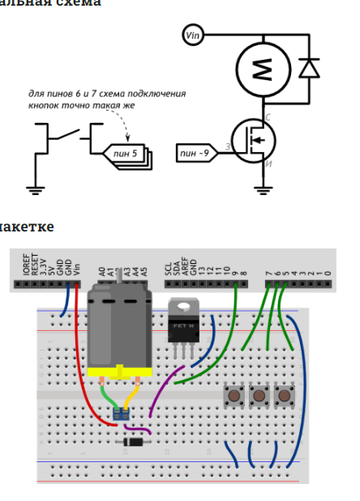

#define MOTOR_PIN 9
#define FIRST_BUTTON_PIN 5
#define BUTTON_COUNT 3
// имена можно давать не только числам, но и целым выражениям.
// Мы определяем с каким шагом (англ. step) нужно менять
// скорость (англ. speed) мотора при нажатии очередной кнопки
#define SPEED_STEP (255 / (BUTTON_COUNT - 1))
void setup()
{
pinMode(MOTOR_PIN, OUTPUT);
// на самом деле, в каждом пине уже есть подтягивающий
// резистор. Для его включения необходимо явно настроить пин
// как вход с подтяжкой (англ. input with pull up)
for (int i = 0; i < BUTTON_COUNT; ++i)
pinMode(i + FIRST_BUTTON_PIN, INPUT_PULLUP);
}
void loop()
{
for (int i = 0; i < BUTTON_COUNT; ++i) {
// если кнопка отпущена, нам она не интересна. Пропускаем
// оставшуюся часть цикла for, продолжая (англ. continue)
// его дальше, для следующего значения i
if (digitalRead(i + FIRST_BUTTON_PIN))
continue;
// кнопка нажата — выставляем соответствующую ей скорость
// мотора. Нулевая кнопка остановит вращение, первая
// заставит крутиться в полсилы, вторая — на полную
int speed = i * SPEED_STEP;
// подача ШИМ-сигнала на мотор заставит его крутиться с
// указанной скоростью: 0 — стоп машина, 127 — полсилы,
// 255 — полный вперёд!
analogWrite(MOTOR_PIN, speed);
}
}